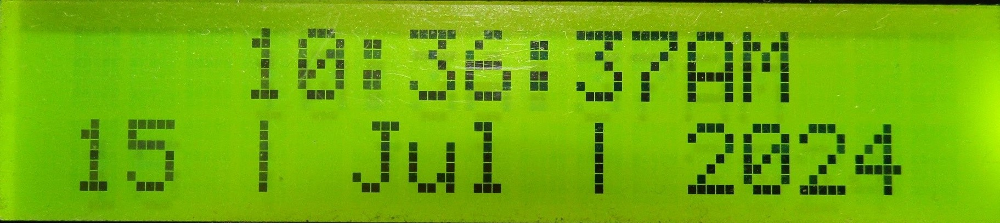

Home Page

void Interface_Home()
{
Functions_dt = clock.getDateTime();
// Time
Functions_LCD.setCursor(0, 0);
Functions_LCD.print(String(" ") + clock.dateFormat("h:i:sA", Functions_dt));
// Date
Functions_LCD.setCursor(0, 1);
Functions_LCD.print(clock.dateFormat("j | M | 20y", Functions_dt));
Functions_Home();
}
void Functions_Home()
{
// Get time to ring from the tasks list
if(resetRinger)
{
SetTaskToRing();
resetRinger = false;
}
// If alarm is ringing
if(clock.isAlarm1())
{
Functions_LCD.clear();
Functions_currentPage = RING;
resetRinger = true;
}
// Button controls for Home page
Buttons_Update();
switch(Buttons_ReturnPressedButton())
{
// Go to Menu Page
case RIGHT_BTN:
{
Functions_LCD.clear();
Buttons_ResetReturnedButton();
Functions_currentPage = MENU;
break;
}
}
}
void SetTaskToRing()
{
// Get the time to ring
Functions_dt = clock.getDateTime();
String timeToRing = Sort_ReturnTimeToRing(Functions_tasks, clock.dateFormat("h:i:sA", Functions_dt));
// Set the alarm
clock.clearAlarm1();
clock.setAlarm1(
0,
(String(timeToRing[0]) + timeToRing[1]).toInt(),
(String(timeToRing[3]) + timeToRing[4]).toInt(),
(String(timeToRing[6]) + timeToRing[7]).toInt(),
DS3231_MATCH_H_M_S
);
// Convert from 24 hour format to AM/PM format
converter.hour = (uint8_t)((String(timeToRing[0]) + timeToRing[1]).toInt());
converter.minute = (uint8_t)((String(timeToRing[3]) + timeToRing[4]).toInt());
converter.second = (uint8_t)((String(timeToRing[6]) + timeToRing[7]).toInt());
String mod_timeToRing = clock.dateFormat("h:i:sA", converter);
// Find the index of the task
for(int i = 0; i < 6; i++)
{
if(mod_timeToRing == Functions_tasks[i])
{
Functions_taskPointer = i;
break;
}
}
}